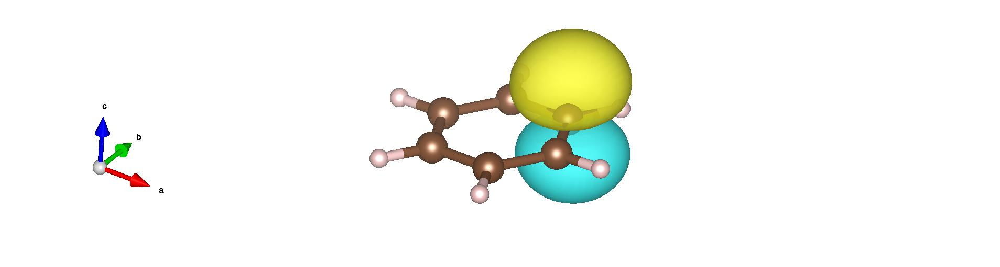

Benzene: Kekulé vs. Resonating Structures
00 Introduction
In this tutorial, following the benzene calculation from the previous chapter, we handle a slightly more advanced task. Concretely, we will schematically estimate the energy difference between (i) the classical electronic description of benzene (the Kekulé structure) and (ii) the resonating aromatic structure (the correct delocalized picture). To do so, we first extract the carbon \(p_z\) orbitals that form the \(\pi\) electron cloud.
All input and output files for this tutorial can be downloaded here.
01 Extracting carbon \(p_z\) orbitals and plotting molecular orbitals
From the obtained wavefunction file fort.10, we will construct the hybrid orbitals for each C and H atom. For the procedure to build hybrid orbitals (GEO method), please refer to Ref. [1].
Based on physical considerations, assign four hybrid orbitals to each carbon and one hybrid orbital to each hydrogen using:
cd 10_hybrid_orbitals
cp ../04_vmc/fort.10 .
cp ../04_vmc/pseudo.dat .
turbogenius convertwf -to agps -nosym -hyb 4 1 4 1 4 1 4 1 4 1 4 1
This projects the wavefunction onto an AGP (Antisymmetrized Geminal Power) form based on hybrid orbitals rather than on atomic-orbital (AO) basis functions. You can visualize the generated hybrid orbitals with:
turbogenius plotorb
The obtained hybrid orbitals are visualized in XSF format, which can be visualized with VESTA.
{kind=link}

From the generated .xsf files, you can identify the carbon \(p_z\) orbitals (which form the \(\pi\) cloud) as follows:
atom |
hyb |
lambda index |
|---|---|---|
1 |
2 |
2 |
3 |
2 |
7 |
5 |
2 |
12 |
7 |
2 |
17 |
9 |
2 |
22 |
11 |
2 |
27 |
Note
In the AGP wavefunction in the hybrid-orbital representation, the pairing-function coefficients (the \(\lambda\) matrix) are defined with respect to these hybrid orbitals. Keep in mind that, in fort.10, the indices for the carbon \(p_z\) orbitals above are 2, 7, 12, 17, 22, 27.
02 Emulating the Kekulé structure
In the Kekulé picture of benzene, double and single bonds alternate around the ring. Interpreted in AGP pairing terms, this corresponds to finite \(\lambda\) couplings only for three carbon–carbon pairs, while the others are set to zero. We will enforce this pattern directly in fort.10.
cd ../11_Kekule_vmcopt
cp ../10_hybrid_orbitals/fort.10 .
cp ../10_hybrid_orbitals/pseudo.dat .
vi fort.10
Locate the block starting with
# Nonzero values of detmat. This region lists the indices and values of the pairing (\(\lambda\)) matrix.To emulate the Kekulé structure, edit the pairs among the six \(p_z\) indices (2, 7, 12, 17, 22, 27) as:
2–7 → keep as is (finite)
7–12 → set to 0
12–17 → keep as is (finite)
17–22 → set to 0
22–27 → keep as is (finite)
27–2 → set to 0
Edit these entries in the
detmatlist accordingly.Next, find the block starting with
# Grouped par. in the chosen ordered basis. Here, columns 2 and 3 are the pair indices (as above), and column 1 is the optimization flag:1= optimize,-1= do not optimize (fixed).For the Kekulé pattern:
2–7, 12–17, 22–27 → optimize (set flag to
1)7–12, 17–22, 27–2 → fixed to 0 (ensure value is 0 and set flag to
-1)all the other indices → optimize (set flag to
1)
Concretely, keep only the following three lines with flag
-1and set all other entries’ first column to1:-1 2 27 -1 7 12 -1 17 22
03 Optimization (Kekulé)
After editing, run the wavefunction optimization in this directory (your usual VMC optimization workflow). Once optimized, evaluate the energy with the optimized wavefunction:
Generate an input file for VMC optimization:
cd ../11_Kekule_vmcopt turbogenius vmcopt -g -opt_onebody -opt_twobody -opt_jas_mat -opt_det_mat -optimizer lr -vmcoptsteps 100 -steps 400 -nw 128 -reg -0.005 -num_opt_param 10
Run the VMC optimization, e,g, as follows:
TURBOVMC_RUN_COMMAND="mpirun -np 16 turborvb-mpi.x" export TURBOVMC_RUN_COMMAND turbogenius vmcopt -r
Perform the postprocess by typing:
turbogenius vmcopt -post -optwarmup 30 -plot
Check plot_energy_and_devmax.png and the files in the parameters_graphs directory.
04 Energy evaluation (Kekulé)
Then, you can evaluate the energy.
cd ../12_Kekule_vmc
cp ../11_Kekule_vmcopt/fort.10 .
cp ../11_Kekule_vmcopt/pseudo.dat .
Next, generate an input file datasvmc.input using:
turbogenius vmc -g -steps 3000 -nw 128
Then, run the VMC calculation, e.g., by typing:
TURBOVMC_RUN_COMMAND="mpirun -np 16 turborvb-mpi.x"
export TURBOVMC_RUN_COMMAND
turbogenius vmc -r
Finally, run the postprocess:
turbogenius vmc -post -bin 20 -warmup 10
Check the reblocked total energy and error in the file pip0.d.
05 Emulating the fully resonating aromatic structure
Now set up the resonating (fully delocalized) \(\pi\)-bond picture by allowing all six nearest-neighbor \(p_z\) pairs to be optimized (finite):
cd ../13_Resonating_vmcopt
cp ../12_Kekule_vmc/fort.10 .
cp ../12_Kekule_vmc/pseudo.dat .
vi fort.10
For the six \(p_z\) indices (2, 7, 12, 17, 22, 27), enable optimization for all ring-adjacent pairs:
2–7, 7–12, 12–17, 17–22, 22–27, 27–2
Thus, in the # Grouped par. block, use flag 1 for all the lines. Specifically, you can change the flags of the following lines.
-1 → 1 2 27
-1 → 1 7 12
-1 → 1 17 22
Note
Depending on how pairs are ordered in your fort.10, you may see (2, 27) instead of (27, 2).
Use the six nearest-neighbor pairs consistently around the ring, matching your index ordering.
06 Optimization (Resonating)
Optimize this resonating AGP wavefunction, then evaluate the energy as in the Kekulé case.
Generate an input file for VMC optimization:
cd ../13_Resonating_vmcopt turbogenius vmcopt -g -opt_onebody -opt_twobody -opt_jas_mat -opt_det_mat -optimizer lr -vmcoptsteps 100 -steps 400 -nw 128 -reg -0.005 -num_opt_param 10
Run the VMC optimization, e,g, as follows:
TURBOVMC_RUN_COMMAND="mpirun -np 16 turborvb-mpi.x" export TURBOVMC_RUN_COMMAND turbogenius vmcopt -r
Perform the postprocess by typing:
turbogenius vmcopt -post -optwarmup 30 -plot
Check plot_energy_and_devmax.png and the files in the parameters_graphs directory.
07 Energy evaluation (Resonating)
Then, you can evaluate the energy.
cd ../14_Resonating_vmc
cp ../13_Resonating_vmcopt/fort.10 .
cp ../13_Resonating_vmcopt/pseudo.dat .
Next, generate an input file datasvmc.input using:
turbogenius vmc -g -steps 3000 -nw 128
Then, run the VMC calculation, e.g., by typing:
TURBOVMC_RUN_COMMAND="mpirun -np 16 turborvb-mpi.x"
export TURBOVMC_RUN_COMMAND
turbogenius vmc -r
Finally, run the postprocess:
turbogenius vmc -post -bin 20 -warmup 10
Check the reblocked total energy and error in the file pip0.d.
08 Comparing energies
With both Kekulé and resonating AGP wavefunctions optimized and their energies computed, compare the two total energies to obtain a schematic measure of the stabilization due to aromatic resonance in benzene.
Kekule: -37.322… Ha
Resonating: -37.353… Ha
Tip
Keep a clear record (e.g., a small table) of which \(\lambda\) pairs are optimized vs. fixed for each case.
Verify that pairs set to zero in the Kekulé setup remain exactly zero during optimization (i.e., flagged
-1).For reproducibility, retain the edited
fort.10files (or diffs) in version control.Since the hybrid orbitals used here are smaller than the basis sets used in previous chapter, the obtained energy with the resonating wavefunction is slightly worse.